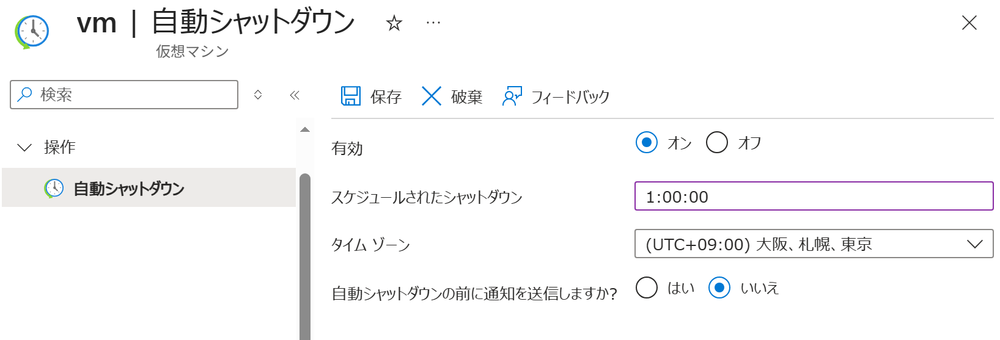
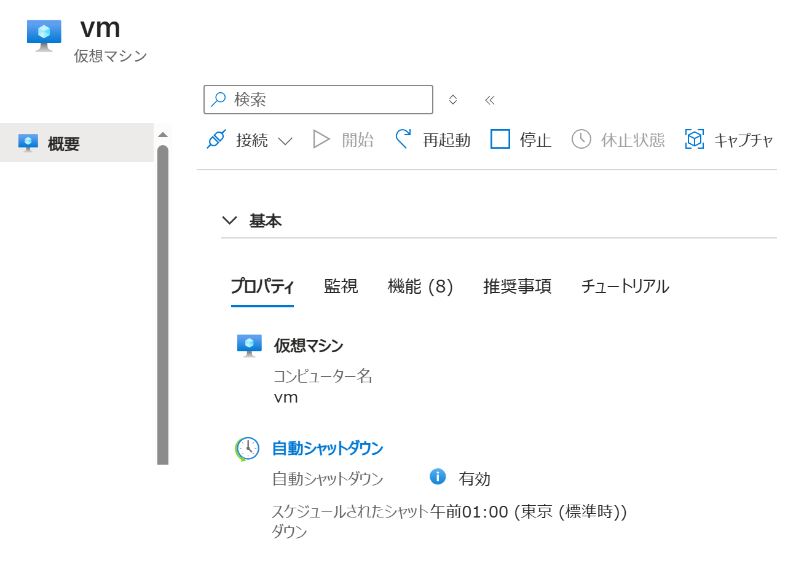

仮想マシンを 停止 / 開始 する
適用対象: ✔️ 仮想マシン
この演習では、Azure ポータルを使用して 仮想マシンを停止および開始します。
所要時間: 約 5 分
先行の演習
この演習を始める前に 仮想マシンを作成する を完了してください。
タスク 1: 仮想マシンの停止と開始
仮想マシンを 停止 および 開始 します。
- ポータルメニューから [仮想マシン] を選択します。
msaz-vmなどを選択します。- コマンドバーで [️🔄 最新の情報に更新] を選択します。

- 状態 の右または 状態 の下（場所 の上）の表示を確認します。表示がないように見える場合は画面を大きくするなどして調整します。
- 状態 が 実行しています の場合
- コマンドバーで [️□ 停止] を選択します。[️はい] を選択します。
- 待ちます。
- 状態 が 停止済み (割り当て解除) です になることを確認します。 - 状態 が 停止済み (割り当て解除) です の場合
- コマンドバーで [️▷ 開始] を選択します。
- 待ちます。
- 状態 が 実行しています になることを確認します。
仮想マシンの状態と課金の関係
| 操作 | 状態 | 課金 |
|---|---|---|
| ポータルで [▷ 開始] | 実行しています | 仮想マシンとディスクが課金される |
| ポータルで [□ 停止] | 停止済み（割り当て解除） | 仮想マシンは課金されないが、ディスクは課金される |
| リモート接続で OSをシャットダウン | 停止済み | OSの操作でシャットダウンしても仮想マシンとディスクの課金は停止されない |
タスク 2: 自動シャットダウンの設定
仮想マシンが特定の時刻にシャットダウンするようにスケジュールを設定します。
- ポータルメニューから [仮想マシン] を選択します。
msaz-vmなどを選択します。- サービスメニューから 操作 ＞ [自動シャットダウン] を選択します。
- 以下の設定値を入力または確認します。指定のない項目はデフォルトのままにします。

設定 値 有効 オンスケジュールされたシャットダウン 1:00:00タイム ゾーン [(UTC+09:00) 大阪、札幌、東京] - コマンドバーで [💾 保存] を選択します。
タスク 3: 作成されたリソースの確認
自動シャットダウンが設定されていることを確認します。
- ポータルメニューから [仮想マシン] を選択します。
msaz-vmなどを選択します。- サービスメニューから [概要] を選択します。
- 自動シャットダウンの設定を確認します
